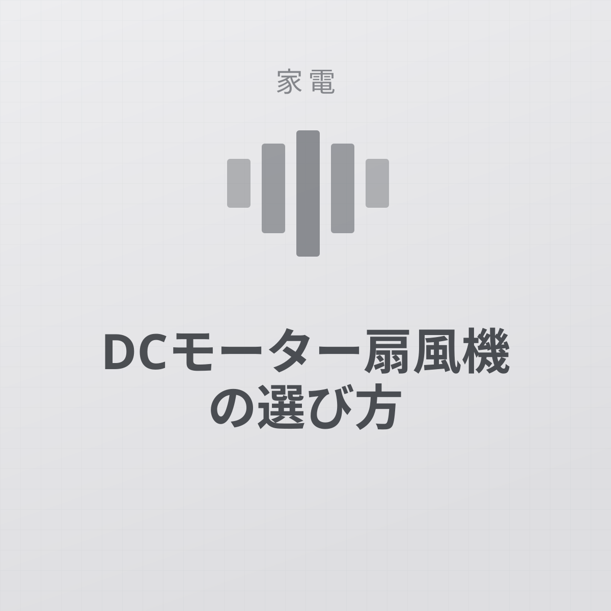
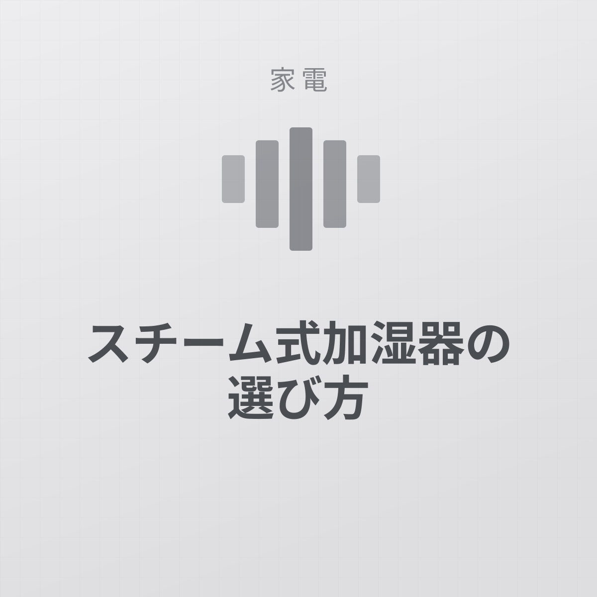
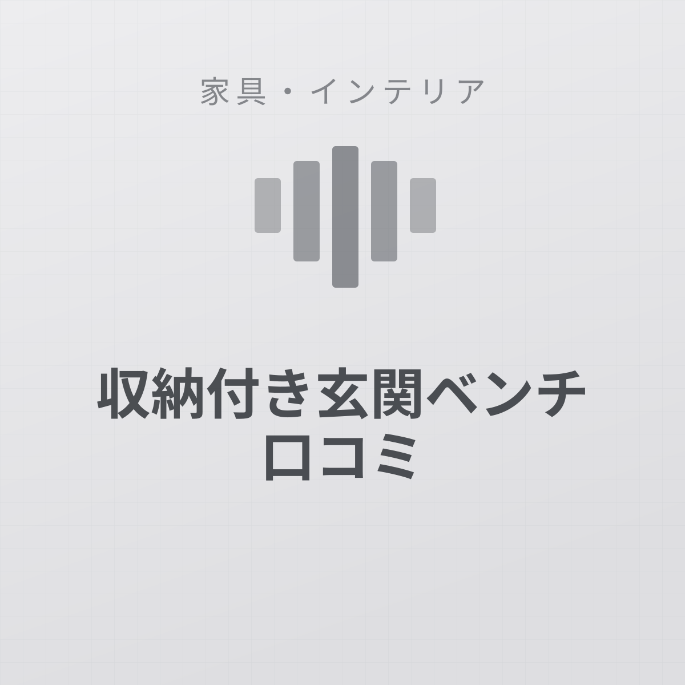

LED投光器（コンセント式・IP66）はどんな人に向くか
電源の確保、コード長2mの制約、光の向き。設置前に確認すべき点をレビューから整理しました。
お知らせ 当サイトの記事には広告（Amazonアソシエイト等）を含みます。掲載価格・在庫は執筆時点のもので、最新情報は販売ページをご確認ください。
加湿器や掃除機のような家電から、毎日使う日用品まで。家事の手間をどれだけ減らせるかという視点で紹介します。
全 9 記事電源の確保、コード長2mの制約、光の向き。設置前に確認すべき点をレビューから整理しました。

見た目は圧倒的に薄い。ただし畳数の選び方を間違えると暗く感じます。

隙間に入る細さが本体。袋のサイズと臭い対策だけは事前に考えておく必要があります。

静かさと微風のためのDCモーター。価格差に見合うかは使う時間で決まります。

配線不要が魅力。ただし日照とWi-Fiが届くかで成否が決まります。

手入れの手間を電気代で買う方式。清潔さを最優先する人向けです。

奥行き25cmで座れる。ただし耐荷重と玄関の通路幅は先に確認してください。

枕は高さがすべて。寝姿勢とマットレスの硬さで正解が変わります。

電気代・お手入れの手間・加湿力を比較。部屋の広さ別のおすすめ方式も解説します。